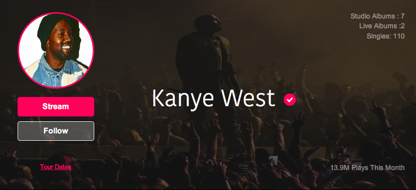

Desc. Music streaming & info site
Role UX/UI Designer
From June 2016
Used HTML, CSS, Balsamiq, Axure, Bootstrap
/jam-fx
This was a freelance job. so the names, photos, and text has been altereed a bit. Jam FX is a music streaming & music information site that gave users the opportunity to stream music, find festivals, and follow their favourite artists. I redesigned the landing page, created an artists page, and a music player popup for this site.
Landing Page
Main navigation menu. When the menu icon was clicked, the menu opened to display the menu items in a few colums and rows.
The landing page has new information every week. The main content on this page are trengin albums, a weekly top chart, and a section listing upcoming festivals.
The album card is pretty simple. It shows the album art, the artist's name, and the name of the album. The tracklist section allows users to scroll through the songs in the album. Users can choose to like a song, add it to a playlist, or open it in the site music player.
Artist Page
The header has two images. The first is a header background, and the second is an avatar for the artist. In the header section, users can stream an artist's music, follow them, and find their tour dates. The header also shows different stats relating to each artist.
The header with some placeholder info: 
The main content of the artist page includes a bunch of information about the artist displayed in two columns and a few rows. The first section users will see is an overview of the artist. From here, users will get a little background info on the artist their viewing, their entire discography, and a some of their most played songs. If users stick in the same column, they will also see a 'biography' and 'on tour' panel as well. Those are pretty self explanatory. The biography gives some background info on the artist, and their career history. The 'on tour' panel gives a list of upcoming tour dates.
On the right column, there is an activity feed relating to the artist. The feed will update when users follow the artist, add a song to a playlist, or have any interaction with the song (like, add to playlist, etc.). The last two panels are related artists, and a small music player.
The artist page put together.
The info on the image is just a placeholder. The site will be catered for independent performers with smaller followings.